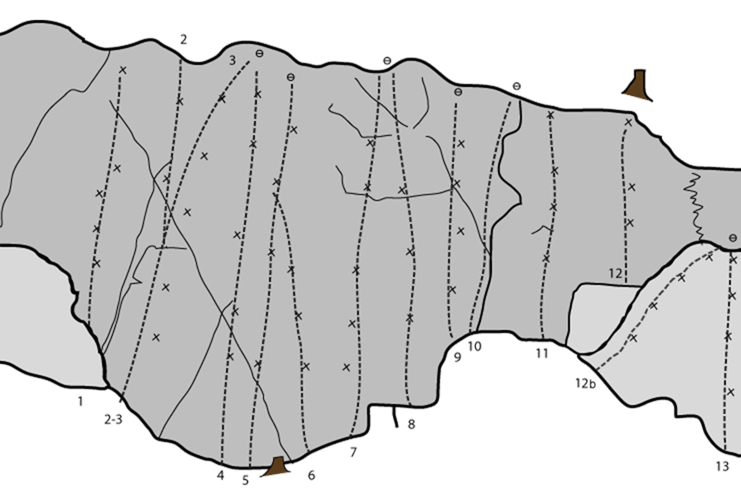
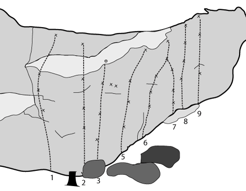
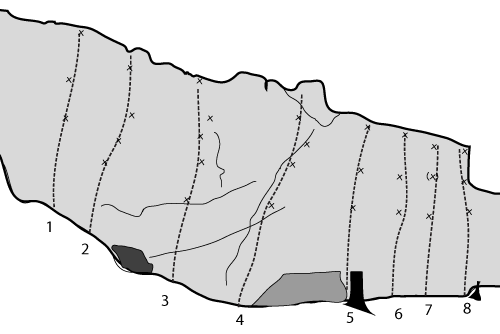
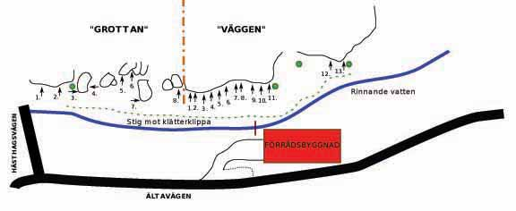
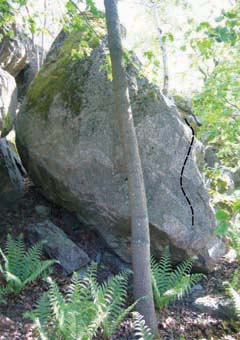
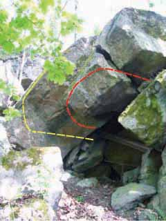
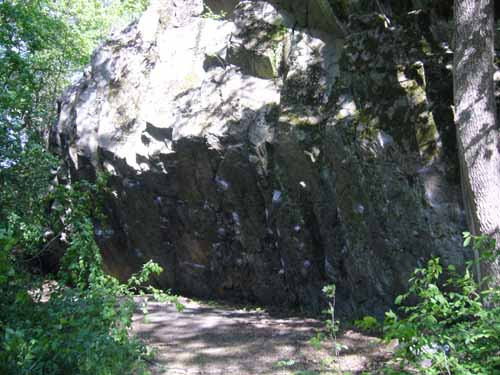
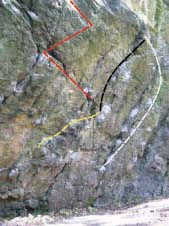
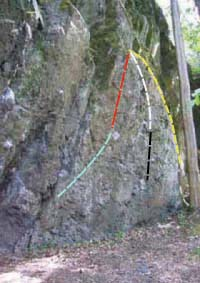
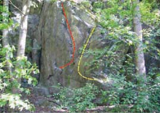

Nacka Kvarn
Lat: 59.29739
Long: 18.14631
Allmänt
Lättillgänglig sportklippa som är perfekt en kväll efter jobbet. Ca 10-15 meter hög och svagt överhängande. Många fina leder i 7a-registret.
Nya bultar!
I en gemensam ansträngning mellan Stockholms KK, Solna KK och Blocstar ombultades flera av de klassiska turerna på stora väggen i Oktober 2007. Nya ankare och bultar där det behövdes. Gamla potentiella markfall är nu åtgärdade. Samtliga expanderbultar är i syrafast stål. Mer info finns på individuella lederna. Läs mer på
Under våren 2008 har även Stockholms Bultkommitté putsat på klippan. Läs mer på
.
Vägbeskrivning
<div style="width: 355; float: right; margin-left: 10px; padding: 3px; border: solid 1px #cccccc;">
<googlemap width=350 height=300 lat="59.29739" lon="18.14631" zoom="14" type="map" controls="small">
59.29739,18.14631,
Nacka Kvarn
</googlemap>
</div>
<div style="float: right; margin-left: 10px;">
<slresa>
titel=Nacka Kvarn
lat=18146310
long=59297390
</slresa>
</div>
Från Sickla centrum sväng höger mot Älta i rondellen. Följ vägen rakt fram. Klippan ligger på vänster sida efter en skarp högerkruva (ca 100 meter efter Ältavägen 95 / busshållplatsen Nacka Kvarn), på andra sidan ån. Parkera vid den utmärkta P-platsen längst upp i backen innan bilbron, ej vid busshållplatsen som är en vändzon. Gå tillbaka till ladan där det finns en liten gångbro över ån och följ stigen åt höger bort till klippan.
Leder
Huvudväggen

thumb|right|200px|Niclas Emdelius på Blind, 7c
- 1
- Blind
- 7c
- Intensiv led längst till vänster. Startar på marken, inte på det (läskiga) blocket. Nytt ankare -08
- 2
- Hundra år av ensamhet
- 6c+
- Var tidigare en mixtur. Startar i och följer det grunda diedret. Toppankare ditsatt -08
- 4
- Totalvägra
- 7a
- Smått klassisk led med hög pumpfaktor och många Stockholmsklättrares första 7a.
- ?
- Odpöt
- 7b/7b+
- Start i Freky Deaky 2 första bultar, sen följ rampen som tydligt är inritad i föraren. korsaa total vägra, lutande tornet och avsluta med slutet av blind. Var berädd på låååånga pendel fall i slutet!!!
- 5
- Freaky deaky
- 7a+
- Ihållande
- 6
- Freaky deaky direkt
- 7b(hela)
- Direktinsteg till Freaky deaky. Ännu mer ihållande.
- 9
- Brown sugar
- 6b+
- Omväxlande och ihållande klättring på lister, sideclings och juggar. Fin.
- 10
- Sjätte juni
- 5c
- Diedern
- 12b
- Varmgarage
- 6c
- Börja i undertag, utan areten
- 14
- Testpatrullen
- 6b+
- Areten th om ''Auktion direkt''
- 15
- Jag ber om ursäkt och tar tillbaka min FA
- 3
- Undertitel: Var lämnar jag in blanketten? Slaben th om ''Testpatrullen''
Blocket

- 0
- Stor tjock dam
- 6c+?
- Mycket klättring trots sin ringa längd
- 3
- Ny Led 1
- 7a
- Ny led. Osäker på grad
- 5
- Flip-flop
- 6c+
- Startar med Flap och hanglar längs läppen hela vägen till den nya 7a+ där man klättrar upp till ankaret.
- 9
- Typ
- 5c
- Ny led. Osäker på grad
2006-12-04:
"Det går flera nya turer på blocket. Den till höger om Algerna kommer vet jag inte vad den heter men jag klättrade den för ett par år sedan. Kändes som typ 7a. På hörnet till höger går det en ny, ganska kul 7a+ och bakom detta hörn en 5c typ. Sedan går det en 6c+ som börjar med Flap och hanglar längs läppen hela vägen till den nya 7a+ där man klättrar upp till ankaret."
Högra delen

-
- 100% dementi
- 7+
- Går till vänster bakom blocket
-
- Projekt
- ?
- Går till vänster bakom blocket
- 2
- Majfair lady
- 7a+
- Ursprungligen gjord utan rep
- 3
- So fucking what (original)
- 8a
- Direkt genom taket
- 3b
- So fucking what
- 7c+?
- Rundar taket till vänster via Majfair lady
-
- plus100
- 8a+
- Start i SFW, slut i Asterix
- 7
- Okänd
- ca 7c
- Högerinsteg till Idefix.
Ännu längre till höger

- 2
- Slå på turbon
- 7c+/8a
- Bultad av [[Johan Boman]]
- 3
- Den röda volvon
- 8a
- Vass och fingrig. Bultad av [[Jimmy Paladino]]
-
- ?
- 7c+/8a
- Ny led mellan 3 och 4. Sikat och chippat
-
- ?
- ?
- Ny led/projekt mellan 6 och 7. Två mycket fult fastsikade grepp
Denna del av klippan verkar ha blivit någon sikatokig persons lekstuga under juni -07
Nacka Kvarn boulder
Nacka Kvarn bjuder inte bara upp på stadsnära repklättring i god kvalitet, innan man når klätterväggen finns även ett antal krimpiga boulderproblem, flertalet av dem finner man på en svagt överhängande vägg. Boulderproblemen är indelade i två områdesindelningar ”Grottan” och ”Väggen”.

Grottan
- 1
- Flinka Fingrar
- 5C
- Krimpigt problem, rakt upp.
- 2
- Långa Ben
- L
- Rakt upp, inget snack!

- 3
- Pygmékonflikten
- 6C+
- (Svart) Knölig klättring.
- 4
- Brain Trainer
- 6A+
- VH på stenens vänstra kant & HH i krimp, klättra rakt upp via listerna för HH.

- 5
- El Grotto
- 6B
- (Gul) Starta med HH i krimp, fötterna på skravel under blocket.
- 6
- En Hemlös Jävel
- 6B+
- (Röd) 3D-klättring, starta med match på crimp under kanten, skicka till jugg, toehook, sträck dig till blockets framsida, tag kant med VH, heelhook på jugg och avsluta stående på stenen till höger.
- 8
- Handledsknäckaren
- 6A+
- VH på nedre delen av kant, HH på krimp, toehooka och klättra rakt upp.
Väggen

- 3
- West Side Connection
- 7C
- Går till höger, avslutas i jugg luftigt ovan marken.
- 4
- Barrabas
- ?
- Sprickan rakt upp.

- 4b
- Wild Style
- 8
- Mellan Barrabas och Ultimate Fighting.
- 5
- Ultimate Fighting
- 8
- (Röd) Klättra som ett Z med start i tvärgående spricka.
- 6
- Lapsilainen
- 7C+
- (Gul) Klättra upp till ståstarten ('''(Svart) Ståstart, Match på sidogrepp, 7C''') HH upp till dålig crimp, toehook med HF, tag sidogrepp till V om crimp med VH, slutar i "Äcklets" slutjugg.
- 7
- Äcklet
- 6C
- (Vit) Klättra rakt upp i goda grepp.
- 8
- ?
- 6B
- Klättra längs sprickan, till höger om "Äcklet".

- 9a
- Rough and Ready
- 7A
- (Blå) Starta i sprickorna, dra lätt till höger, vänstra kanten ingår, sluta med att klättra till höger på den slopiga kanten till slutjugg för "Skippy.
- 9b
- Skippy
- ?
- (Röd) Variant, dyno från spricka med VH och crimp med HH, till "Skippys" slutjugg.
- 10a
- Get It Shorty
- 7B
- (Svart) Starta på crimp rakt upp, avsluta med att klättra till vänster längs den slopiga kanten, avsluta i slutjugg för "Skippy".
- 10b
- Fedora
- 6B+
- (Vit) Variant, ståstart av "Get It Shorty".
- 11
- Mossebacke
- 7A+
- (Gul) Crimp, slopers till vänster längs kanten, avsluta i "Skippys" slutjugg.

- 12
- Högbulle
- 6A
- (Röd) Vänstra problemet, följ kanten upp.
- 13
- Zeke
- L
- (Gul)Startar till höger och klättra in till vänster i "Högbulle", dra sedan till höger i
skravlet.
Kategori:Nacka-Värmdö
Kategori:Stockholm
Kategori:Sport
Kategori:Överhäng
Kategori:Vertikalt
Kategori:Bouldering